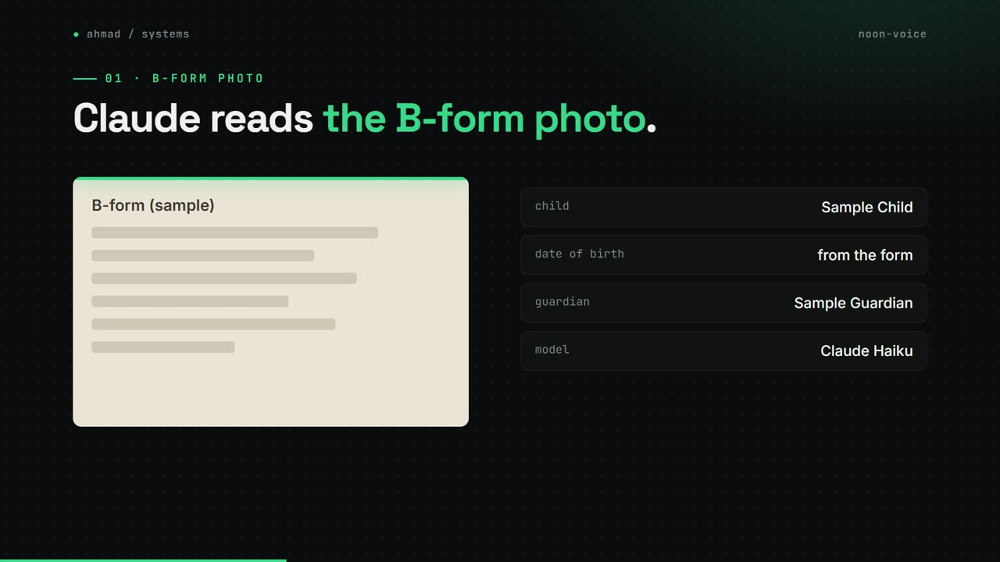
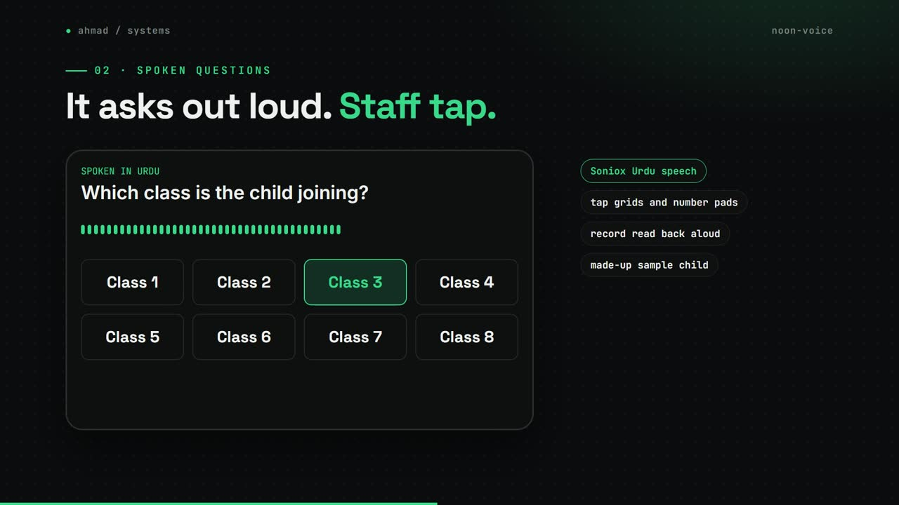
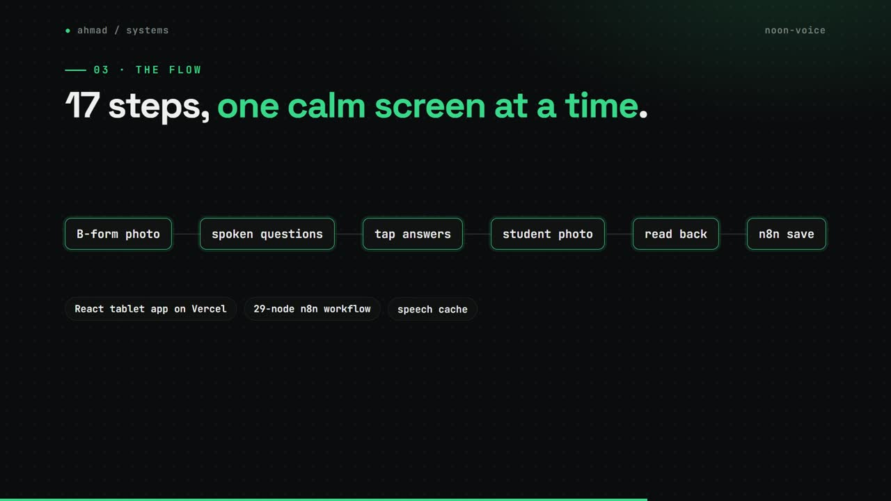
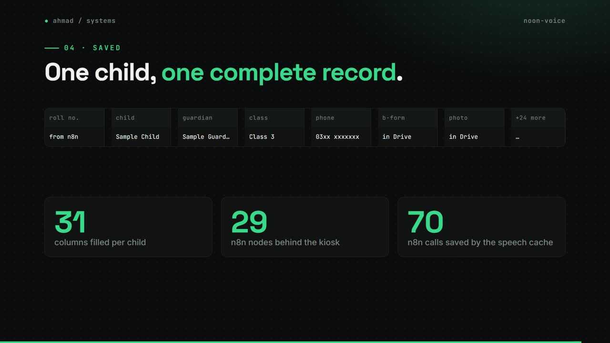

Noon enrollment kiosk
An Urdu tablet kiosk that talks staff through enrolling out-of-school children, with almost no typing.
my role Built it solo: 23 commits in 13 days.
The problem
Enrolling out-of-school children meant long forms and manual entry into sheets. Staff needed something they could use in Urdu, on a tablet, with almost no typing.
How it works
- Staff photograph the child's B-form, and Claude Haiku reads the fields from the photo.
- The kiosk speaks each question in Urdu, and staff answer on number pads and tap grids.
- A student photo is taken, and the whole record is read back aloud for review.
- n8n saves it to a 31-column Google Sheet, files the photos in Drive and makes the roll number.
What changed
- 17steps in the enrollment flow
- 29n8n nodes behind it
- 70n8n calls saved by the speech cache
- 31columns filled per child
What I built
- The React tablet app and the 17-step enrollment flow.
- The 29-node n8n workflow behind it.
- A speech cache that removes about 70 n8n calls after the first session.
Stack
- React
- TypeScript
- Vite
- n8n
- Claude Haiku
- Soniox
- Web Speech API
- Google Sheets
- Vercel
Stills



